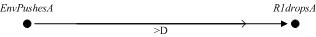
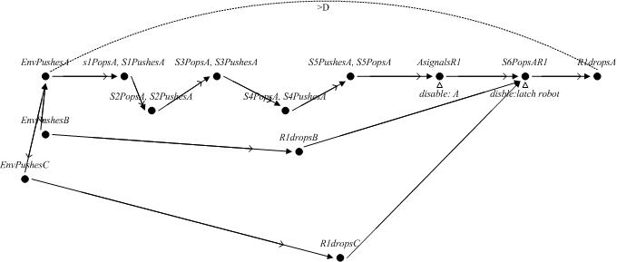

Conveyor Chain
A Conveyor Chain is modeled as a pipeline of communicating stages (single-slot active queues that push and pop objects from and to neighboring stages) where objects are fed at one end and consumed at the other, according to a FIFO policy. Each stage and each flowing object is modeled by a TA. The consumer (called the robot) has a latch that accumulates the signals produced by objects when they arrive to the last slot.
Size: 11 TAs, 11 Clocks.
Original Scenario: We want to check if there exists a case where an object could flow in the pipeline for more than a given amount of time. Being a scalable example, our experiment is a configuration consisting of 6 stages and 3 objects.

Figure
1: Converyor's original scenario| Location | Location | ||||||||||
| Components | 0 | 1 | 2 | 3 | Clocks | 0 | 1 | 2 | 3 | ||
| Conveyor | X | X | X | X | TA | X | X | ||||
| robot1 | X | X | TB | X | X | ||||||
| stag1 | X | X | TC | X | X | ||||||
| stag2 | X | X | TR1 | X | X | ||||||
| stag3 | X | X | TS1 | X | X | ||||||
| stag4 | X | X | TS2 | X | X | ||||||
| stag5 | X | X | TS3 | X | X | ||||||
| stag6 | X | X | TS4 | X | X | ||||||
| a | X | X | TS5 | X | X | ||||||
| b | X | X | TS6 | X | X | ||||||
| c | X | X | X_aux_0 | X | X | ||||||
| latchrobot1 | X | X | |||||||||
Table 1: Components and Clocks activity tables
Refined Scenario: For Conveyor Chain, we generated the scenario of by (a) detailing (tracking $A$s traversal) and (b) specializing (since this scenario assumes that objects $B$ and $C$ were previously injected in the pipe). Together with three scenarios capturing the situations where no previous $B$ and/or $C$ were injected before $A$, this scenario manipulation would constitute an exhaustive coverage specialization. If verification engineers just focus on the depicted scenario, the manipulation falls into a worst case specialization (which is the natural choice for this case study).
The scenario thus generated allows the slicer to deduce that, once out of the pipe, objects $B$ and $C$ are irrelevant. Irrelevance is also deduced about any pipeline stage once it is traversed by the observed object $A$. This greatly reduces the state space traversal done by the model checker, as can be seen in the table. It is worth mentioning that, for this scenario, the directives for \verb"Sojourn Set Calculator" should include either all components or a set of constraint automata. These constraint automata convey the following information: the actual order of events that affect $A$ (first it enters the pipe, later it is popped or pushed by $S5$ and finally it is popped by the consumer to repeat the same sequence) and the fact that the chain is FIFO (neither a $B$ nor a $C$ injected after $A$ can overpass $A$).

Figure 2: Converyor's refined scenario
| Components | 0 | 1 | 2 | 3 | 4 | 5 | 6 | 7 | 8 | 9 | 10 | 11 | 12 | 13 | 14 | 15 | 16 | 17 | 18 | 19 | 20 | 21 | 22 | 23 | 24 | 25 | 26 | 27 | 28 | 29 | 30 | 31 | 32 | 33 | 34 | 35 | 36 | 37 | 38 | 39 |
| ConveyorBC | X | X | X | X | X | X | X | X | X | X | X | X | X | X | X | X | X | X | X | X | X | X | X | X | X | X | X | X | X | X | X | X | X | X | X | X | X | X | X | X |
| robot1 | X | X | X | X | X | X | X | X | X | X | X | X | X | X | X | X | X | X | X | X | X | X | X | X | X | X | X | X | X | X | X | X | X | X | X | X | X | X | ||
| stag1 | X | X | X | X | X | X | X | X | X | X | X | X | X | |||||||||||||||||||||||||||
| stag2 | X | X | X | X | X | X | X | X | X | X | X | X | X | X | X | X | X | |||||||||||||||||||||||
| stag3 | X | X | X | X | X | X | X | X | X | X | X | X | X | X | X | X | X | X | X | X | X | |||||||||||||||||||
| stag4 | X | X | X | X | X | X | X | X | X | X | X | X | X | X | X | X | X | X | X | X | X | X | X | X | X | |||||||||||||||
| stag5 | X | X | X | X | X | X | X | X | X | X | X | X | X | X | X | X | X | X | X | X | X | X | X | X | X | X | X | X | X | |||||||||||
| stag6 | X | X | X | X | X | X | X | X | X | X | X | X | X | X | X | X | X | X | X | X | X | X | X | X | X | X | X | X | X | X | X | X | X | X | X | X | X | |||
| a | X | X | X | X | X | X | X | X | X | X | X | X | X | |||||||||||||||||||||||||||
| b | X | X | X | X | X | X | X | X | X | X | X | X | X | X | X | X | X | X | X | |||||||||||||||||||||
| c | X | X | X | X | X | X | X | X | X | X | X | X | X | X | X | X | X | X | X | |||||||||||||||||||||
| latchrobot1 | X | X | X | X | X | X | X | X | X | X | X | X | X | X | X | X | X | X | X | X | X | X | X | X | X | X | X | X | X | X | X | X | X | X | X | X | X |
Table 2.1: Components activity table
| Clocks | 0 | 1 | 2 | 3 | 4 | 5 | 6 | 7 | 8 | 9 | 10 | 11 | 12 | 13 | 14 | 15 | 16 | 17 | 18 | 19 | 20 | 21 | 22 | 23 | 24 | 25 | 26 | 27 | 28 | 29 | 30 | 31 | 32 | 33 | 34 | 35 | 36 | 37 | 38 | 39 |
| TA | X | X | X | X | X | X | X | X | X | X | X | X | X | |||||||||||||||||||||||||||
| TB | X | X | X | X | X | X | X | X | X | |||||||||||||||||||||||||||||||
| TC | X | X | X | X | X | X | X | X | X | X | X | X | X | X | ||||||||||||||||||||||||||
| TR1 | X | X | X | X | X | X | X | X | X | X | X | X | X | X | X | X | X | X | X | X | X | X | X | X | X | X | X | X | ||||||||||||
| TS1 | X | X | X | X | X | X | X | X | X | X | X | X | X | |||||||||||||||||||||||||||
| TS2 | X | X | X | X | X | X | X | X | X | X | X | X | X | X | X | X | X | |||||||||||||||||||||||
| TS3 | X | X | X | X | X | X | X | X | X | X | X | X | X | X | X | X | X | X | X | X | X | |||||||||||||||||||
| TS4 | X | X | X | X | X | X | X | X | X | X | X | X | X | X | X | X | X | X | X | X | X | X | X | X | X | |||||||||||||||
| TS5 | X | X | X | X | X | X | X | X | X | X | X | X | X | X | X | X | X | X | X | X | X | X | X | X | X | X | X | X | X | |||||||||||
| TS6 | X | X | X | X | X | X | X | X | X | X | X | X | X | X | X | X | X | X | X | X | X | X | X | X | X | X | X | X | X | |||||||||||
| X_aux_0 | X | X | X | X | X | X | X | X | X | X | X | X | X | X | X | X | X | X | X | X | X | X | X | X | X | X | X | X | X | X | X | X | X | X | X | X | X | X |
Table 2.1: Clocks activity table